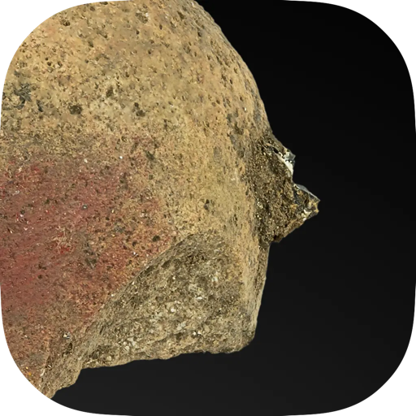

ochre
version 0.1.2
download ochrewhat's new · 8 Nov 2026
Ochre is now signed and notarized by Apple. Nothing changes in how you use it.
- Opening Ochre for the first time no longer needs a trip to System Settings: macOS just asks once whether to open an app downloaded from the internet.
- Updates are checked by Apple before they reach you.
installing
- open the dmg and drag ochre to applications.
- open ochre and confirm when macos asks whether to open an app downloaded from the internet.
- that’s it. new versions install by themselves when ochre quits; ochre → check for updates… checks right away.